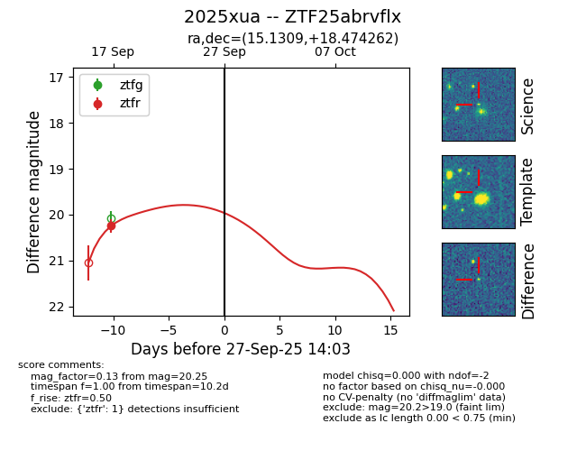
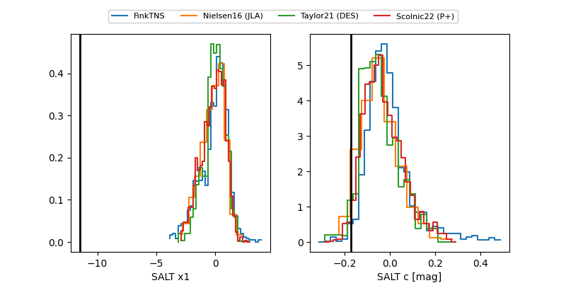

FINK: ZTF25abrvflx
Lasair: ZTF25abrvflx
ALeRCE: ZTF25abrvflx
TNS: 2025xua
YSE: 2025xua
ZTF25abrvflx (ztf,fink)
2025xua (tns,yse)
equatorial (ra, dec) = (15.1309,+18.47426)
galactic (l, b) = (125.9450,-44.34432)


last ztfr=20.25
1 ztfr detections